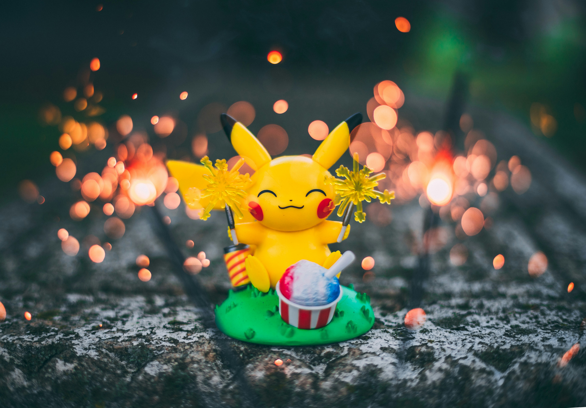

why pokemon is my favourite?
I really watching Pokemon because it's cool. It's cute, it's funny. You really need to watch it. My favourite
character in Pokemon is Pikachu, Ash, Squirtle, Pichu, Raichu. Pokemon has always been a very fun and entertaining
series.
I've pretty much enjoyed every saga in Pokemon except for a good chunk of Johto, so as long as the
show remains above Johto quality, (which it has, considering every saga afteward was a drastic improvement), I'll
keep watching. A nice break from serious stuff. How can you NOT love the idea of little elemental monsters? XD
It's the only anime I can watch. I don't know why, but my interest for others is lacking.
Pikachu VS Raichu

.png)
Even with Pikachu's perfect design, the Pokémon and Raichu were often contrasted against each other in the
Pokémon anime, with Raichu having brute strength at the cost of Pikachu's agility. This is untrue in the games,
however, where Pikachu is weaker than Raichu by at least 15 points in every stat.
.gif)